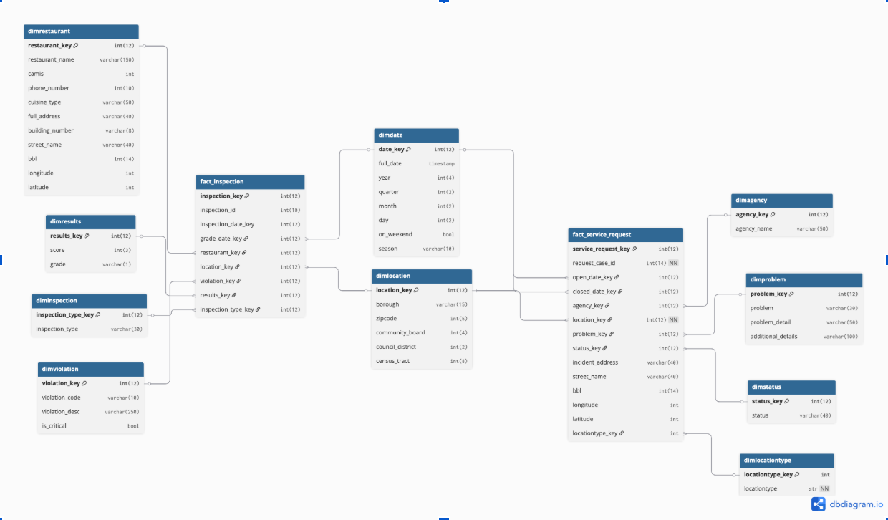
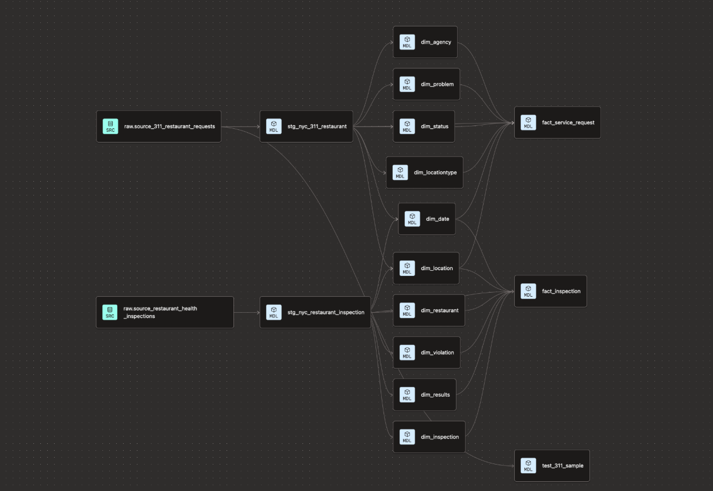
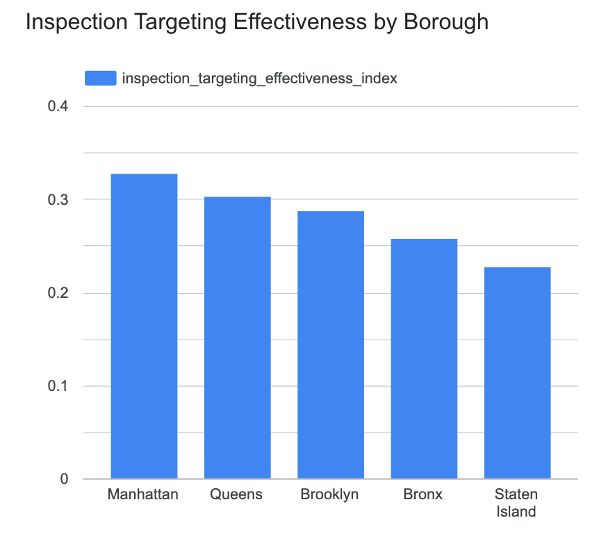
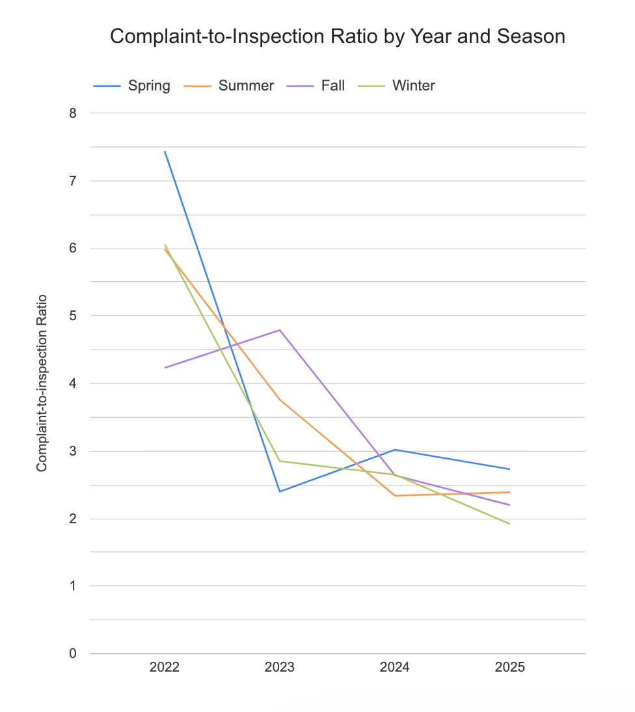
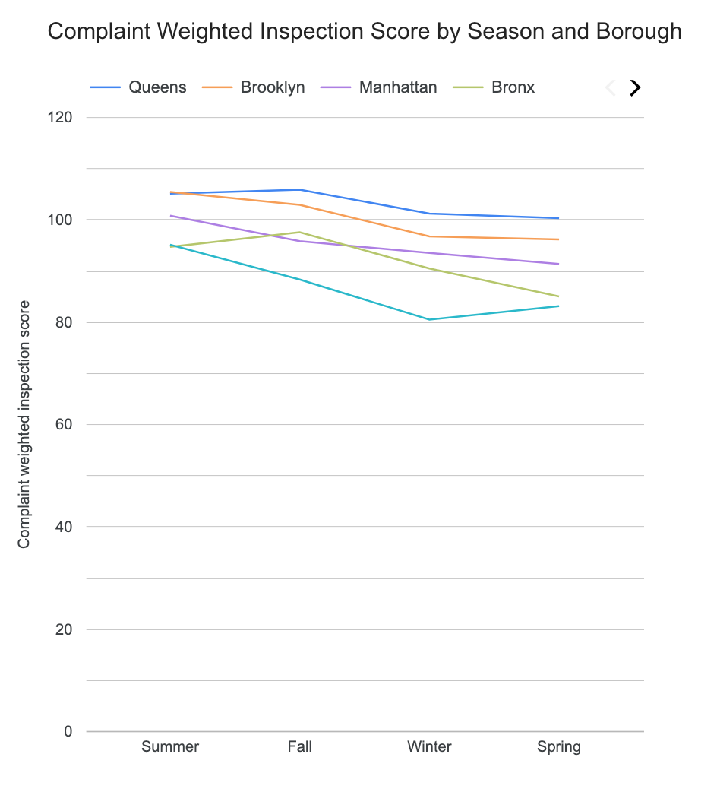
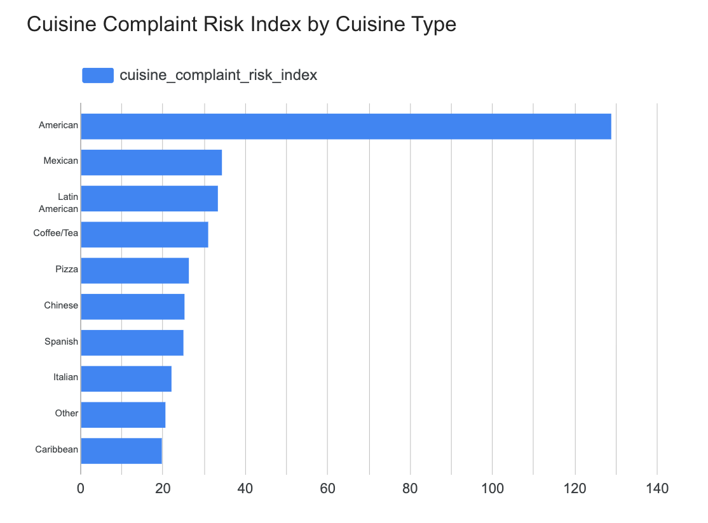
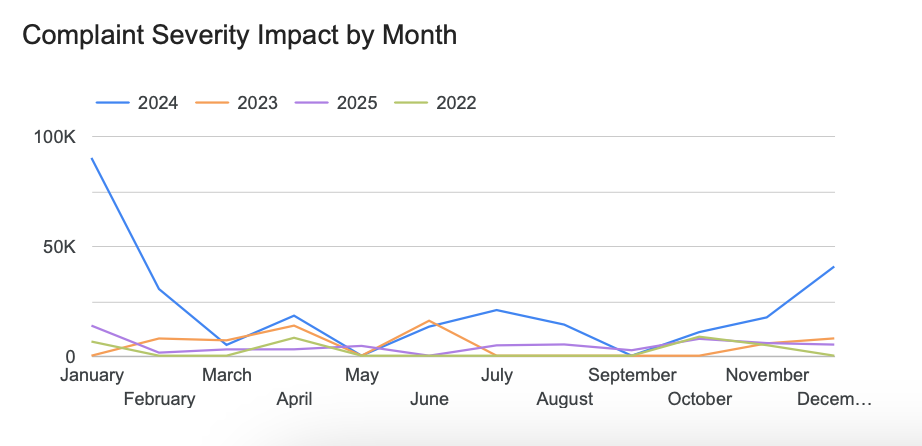
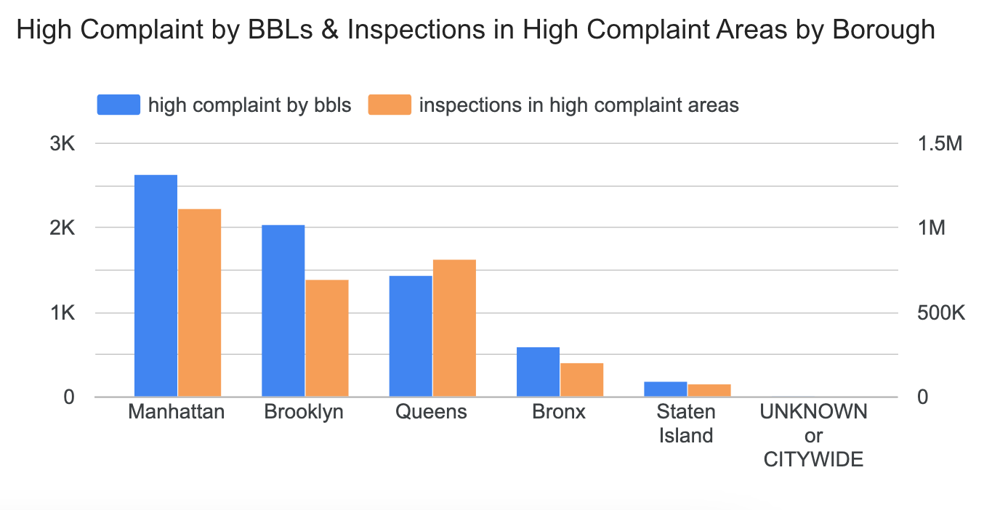

Data Warehousing · Analytics
The five KPI queries, the dimensional model, and the pipeline lineage graph are on GitHub.
New York City collects two large streams of information about restaurants and keeps them apart. Residents file 311 complaints about food safety, sanitation, and vermin. Health inspectors separately produce scores and letter grades. Neither dataset knows about the other, so a natural question goes unanswered: do complaints predict what inspectors find, and is the city inspecting the places people are complaining about?
Build a dimensional warehouse that joins both sources on shared dimensions, then define KPIs that only work because the sources are joined — measures that can't be computed from either dataset alone.
How do customer-reported complaints relate to official inspection scores across boroughs? And how do location and cuisine type influence both complaint volume and inspection performance?
The Department of Health and Mental Hygiene, city health inspectors, the Department of Consumer and Worker Protection, and restaurant owners — anyone deciding where limited inspection capacity should go.
A Kimball star schema with two marts — one for inspections, one for 311 complaints — sharing conformed dimensions. The sharing is the point: it's what makes cross-source analysis possible at all.

fact_inspection — one inspection result, at violation level. Joins to restaurant, inspection type, violation, results, date, and location.
fact_service_request — one 311 service request. Joins to date, location, agency, problem, status, and location type.
dim_date and dim_location are shared by both fact tables. Without them the two marts would sit side by side and answer nothing jointly. With them, complaint activity and inspection outcomes can be compared by borough, ZIP code, season, and year.
The obvious way to join these datasets is BBL — Borough, Block, Lot — the city's property identifier. It gives an exact, building-level match, which is what you want when asking whether this specific restaurant generated complaints before failing an inspection.
In practice BBL was neither complete nor consistently formatted across both sources. Rather than accept the coverage loss, the model was designed to work at two levels: KPIs that need precision still join on BBL, while others fall back to the conformed location and date dimensions. That means partial BBL coverage degrades the analysis instead of breaking it — the central design decision in the whole model.
A three-stage ELT — raw, staging, marts — with extraction running on Cloud Run and transformation in dbt.
Python functions on Cloud Run pull from the Socrata API, paginating in 5,000-row chunks with an app token held in an environment variable. The 311 feed is filtered at extraction to rows where location_type contains "Restaurant" — filtering at the source rather than after loading keeps the raw tables to a workable size.
dbt cleans and standardizes into a staging layer: borough and cuisine names normalized, date fields converted to consistent timestamps, duplicate and incomplete records removed. Marts then build the star schema, with dimension models upstream of fact models.

Each of these requires both datasets. None can be computed from complaints or inspections alone — which is the argument for building the warehouse in the first place.
KPI 01 · Lead finding
Are inspectors actually going where the complaints are? The index averages three sub-metrics: what share of inspections happen in complaint-heavy areas, whether those areas get inspected at all, and whether inspection volume correlates with complaint volume.
-- High-complaint BBLs = top 25% of complaint counts
threshold AS (
SELECT APPROX_QUANTILES(complaint_count, 4)[OFFSET(3)] AS complaint_p75
FROM combined
)
...
SELECT
borough,
-- METRIC 1: share of all inspections landing in complaint-heavy areas
SAFE_DIVIDE(SUM(inspection_count),
(SELECT SUM(inspection_count) FROM combined))
AS high_complaint_inspection_rate,
-- METRIC 2: do complaint-heavy areas get inspected at all?
SAFE_DIVIDE(COUNT(DISTINCT CASE WHEN inspection_count > 0 THEN bbl END),
COUNT(DISTINCT bbl))
AS complaint_coverage_ratio,
-- METRIC 3: does inspection activity rise with complaint activity?
CORR(complaint_count, inspection_count)
AS complaint_inspection_alignment_score,
-- FINAL: mean of the three
( ... ) / 3 AS inspection_targeting_effectiveness_index
FROM high_complaint_bbls
GROUP BY borough
The index lands between 0.20 and 0.35 across all five boroughs, against an optimal value of 1.0. Manhattan is highest at 0.33; Staten Island lowest.
Inspection capacity is not being directed at the places generating the most complaints. The gap is widest in less densely populated areas, which suggests either slower response or thinner regulatory coverage where complaint volume is lower in absolute terms but still concentrated.
KPI 02
Do complaint spikes line up with worse inspection outcomes, and does that pattern move with the seasons?
SELECT
sc.year, sc.season, sc.borough,
sc.seasonal_complaints,
si.seasonal_inspections,
-- Metric 1: complaints relative to inspections
ROUND(SAFE_DIVIDE(sc.seasonal_complaints,
si.seasonal_inspections), 2)
AS complaint_to_inspection_ratio,
-- Metric 2: inspection severity weighted by complaint volume
ROUND(SAFE_DIVIDE((si.avg_inspection_score * sc.seasonal_complaints),
sc.seasonal_complaints), 2)
AS complaint_weighted_inspection_score
FROM seasonal_complaints sc
LEFT JOIN seasonal_inspections si
ON sc.year = si.year
AND sc.season = si.season
AND sc.borough = si.borough
WHERE sc.year >= 2022 AND sc.year < 2026

Complaint-to-inspection ratios peaked in 2022, especially in spring, and are consistently lowest in winter. Summer and fall carry both higher complaint ratios and higher complaint-weighted inspection scores — warmer months are worse on both measures at once.
Queens and Brooklyn hold the highest complaint-weighted scores across seasons. Worth noting that in the NYC grading system a higher score means worse sanitary conditions.
KPI 03
Which cuisine types combine high complaint activity with weak inspection performance? Complaints are tied to cuisine through the shared BBL field.
SELECT
cuisine_type,
total_complaints,
total_inspections,
avg_inspection_score,
-- complaint frequency relative to inspection volume
SAFE_DIVIDE(total_complaints, total_inspections)
AS complaint_rate_per_cuisine_inspection,
-- FINAL: complaint rate over inspection performance
SAFE_DIVIDE(
SAFE_DIVIDE(total_complaints, total_inspections),
avg_inspection_score
) AS cuisine_complaint_risk_index
FROM combined
WHERE total_inspections >= 10 -- drop thin cuisine categories
ORDER BY cuisine_complaint_risk_index DESC
American cuisine tops the index at roughly 130 — close to four times the next category. High complaint volume alongside higher violation penalty points.
The WHERE total_inspections >= 10 filter matters here: without it, cuisine types with a handful of inspections produce unstable ratios that dominate the ranking for no meaningful reason.
KPI 04
Do severe complaints predict worse inspections? The 311 data has no severity field, so severity was derived from keywords — food, sanitation, dirty, vermin, rodent — across the problem and problem-detail fields.
-- No severity field exists in 311, so define it by keyword
WHERE sr.bbl IS NOT NULL
AND d.year BETWEEN 2022 AND 2025
AND (
LOWER(p.problem) LIKE '%food%'
OR LOWER(p.problem) LIKE '%sanitation%'
OR LOWER(p.problem) LIKE '%dirty%'
OR LOWER(p.problem) LIKE '%vermin%'
OR LOWER(p.problem) LIKE '%rodent%'
OR LOWER(p.problem_detail) LIKE '%food%'
...
)
...
-- FINAL: severity impact score
SAFE_DIVIDE(
AVG(CASE WHEN severe_complaint_count > 0
THEN avg_inspection_score END),
SAFE_DIVIDE(
COUNT(DISTINCT CASE WHEN severe_complaint_count > 0 THEN bbl END),
COUNT(DISTINCT bbl))
) AS severity_impact_score
Months with higher severity impact scores were generally associated with worse inspection outcomes, with peaks in January, July, and December.
The honest caveat: severity here is a keyword proxy, not a field the city publishes. It's a defensible construction, but it's a construction — and a different keyword set would produce different numbers.
KPI 05
At the location level, do areas with more complaints per inspection also carry worse average inspection scores?
SELECT
l.borough,
COUNT(DISTINCT c.location_key) AS total_locations,
SUM(c.total_complaints) AS total_complaints,
SUM(c.total_inspections) AS total_inspections,
ROUND(AVG(c.complaint_rate_per_inspection), 2)
AS avg_complaint_rate_per_inspection,
ROUND(AVG(c.avg_inspection_score), 2)
AS avg_inspection_score,
-- FINAL: complaint rate normalized by inspection score
ROUND(AVG(c.complaint_rate_per_inspection)
/ NULLIF(AVG(c.avg_inspection_score), 0), 4)
AS complaint_adjusted_inspection_risk
FROM combined c
INNER JOIN dim_location l ON c.location_key = l.location_key
GROUP BY l.borough
ORDER BY complaint_adjusted_inspection_risk DESC
Complaint density and poor inspection outcomes do move together at borough level. Manhattan recorded over 2,500 high-complaint BBLs and Brooklyn roughly 2,000 — the two densest boroughs concentrate both public complaints and enforcement activity.
Joining the two sources produced findings neither could support alone.
Complaint data is a usable signal for inspection planning. Complaint activity and poor inspection outcomes align by cuisine, by borough, and by season — and current inspection targeting captures very little of that signal.
For stakeholders planning 2026 inspections, the practical implication is that 311 volume should be an input to deployment decisions rather than a parallel record nobody consults.
BBL coverage limited property-level matching, so much of the analysis runs at borough granularity — coarser than it should be for operational decisions. Complaint severity is a keyword proxy rather than a published field.